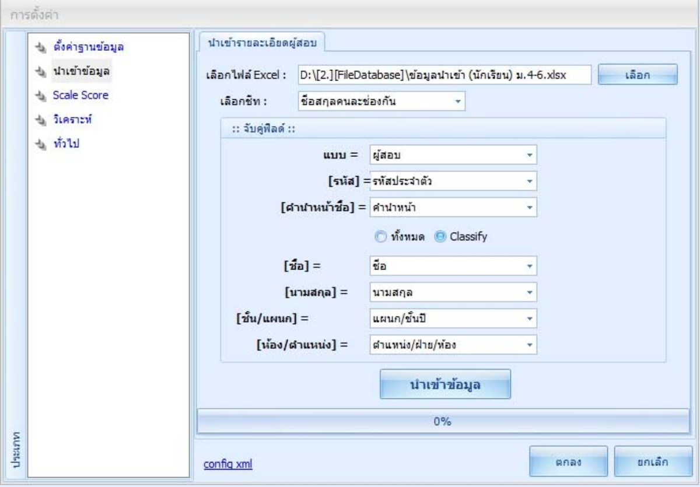
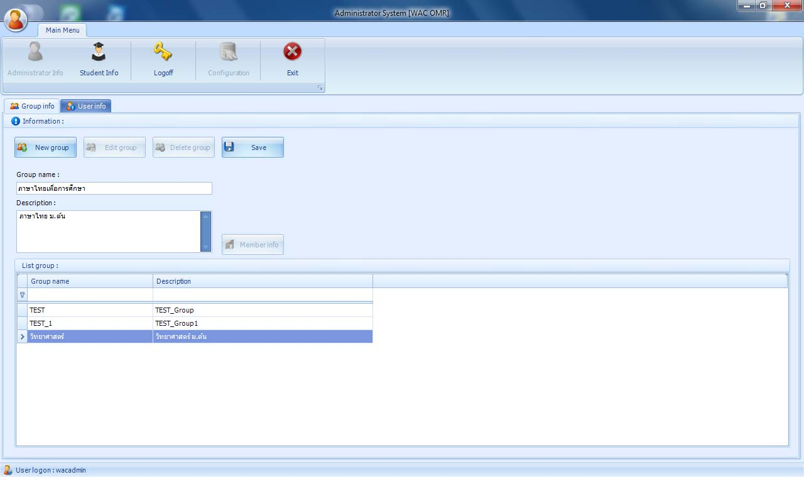

การใช้งานเครื่องตรวจข้อสอบ
เครื่องตรวจข้อสอบมีประโยชน์อย่างมากในการเพิ่มความแม่นยำและความรวดเร็วในการตรวจสอบข้อสอบ ช่วยลดความผิดพลาดที่อาจเกิดขึ้นจากการตรวจสอบด้วยมือ ทำให้ผลการสอบมีความน่าเชื่อถือและเป็นธรรมมากขึ้น นอกจากนี้ยังช่วยประหยัดเวลาในการตรวจสอบข้อสอบจำนวนมากในเวลาอันสั้น ครูผู้สอนสามารถใช้เวลาที่ประหยัดได้ในการเตรียมการสอน และพัฒนานักเรียน ทำให้การจัดการงานด้านการเรียนการสอนมีประสิทธิภาพมากขึ้น อีกทั้งยังช่วยลดภาระงานของครูในการตรวจข้อสอบด้วยมือ ทำให้ครูสามารถมุ่งเน้นไปที่การสอน และการพัฒนาศักยภาพของนักเรียนได้มากขึ้น นอกจากนี้ การใช้เครื่องตรวจข้อสอบยังสามารถเก็บข้อมูลและวิเคราะห์ผลการสอบได้อย่างละเอียดและรวดเร็ว ทำให้สามารถใช้ข้อมูลเหล่านี้ในการปรับปรุงและพัฒนาการเรียนการสอนในอนาคตได้อย่างมีประสิทธิภาพ
1. ออกแบบกระดาษคำตอบ
การออกแบบกระดาษคำตอบเป็นขั้นตอนแรกที่สำคัญในการใช้งานเครื่องตรวจข้อสอบ ควรมีการจัดเรียงข้อสอบอย่างเป็นระเบียบ และให้มีพื้นที่เพียงพอสำหรับการระบายคำตอบ โดยควรมีช่องให้ระบายคำตอบ A, B, C, D หรือ E ตามจำนวนตัวเลือกของข้อสอบแต่ละข้อ นอกจากนี้ยังควรมีส่วนที่ให้นักเรียนกรอกชื่อ รหัสนักเรียน และข้อมูลส่วนตัวอื่นๆ เพื่อความสะดวกในการประมวลผล
การออกแบบกระดาษคำตอบสามารถทำได้โดยใช้โปรแกรม MS-Visio หรือโปรแกรมออกแบบอื่น ๆ ที่สามารถกำหนดตำแหน่งและพิมพ์ได้อย่างแม่นยำ โปรแกรมเหล่านี้ช่วยให้การจัดวางช่องคำตอบ ชื่อ รหัสนักเรียน และข้อมูลอื่น ๆ เป็นระเบียบเรียบร้อย ช่วยให้เครื่องตรวจข้อสอบสามารถอ่านและประมวลผลได้อย่างถูกต้องและมีประสิทธิภาพ การใช้โปรแกรมที่มีความสามารถในการออกแบบเช่นนี้ ทำให้กระดาษคำตอบที่ได้มีความสม่ำเสมอ ลดความผิดพลาดในการตรวจสอบ และเพิ่มความรวดเร็วในการประมวลผลผลการสอบ
2. สร้างโปรไฟล์
โปรไฟล์ที่ต้องสร้างมีสองประเภทหลัก ได้แก่ โปรไฟล์นักเรียน และโปรไฟล์รายชื่อวิชา
-
นักเรียน
ข้อมูลนักเรียนควรประกอบด้วยชื่อ รหัสนักเรียน ชั้นเรียน และข้อมูลส่วนตัวอื่น ๆ ที่จำเป็นสำหรับการประมวลผลผลสอบ ซึ่งสามารถจัดเก็บในฐานข้อมูลเพื่อความสะดวกในการเรียกใช้
ข้อมูลนักเรียนสามารถสร้างได้โดยการนำเข้าจาก MS-Excel ที่มีการจัดรูปแบบข้อมูลตามข้อกำหนดที่กำหนดไว้ล่วงหน้า เพื่อความสะดวกในการนำเข้าข้อมูลจากระบบระเบียนนักเรียนที่โรงเรียนใช้อยู่ วิธีนี้ช่วยให้การจัดการข้อมูลนักเรียนเป็นไปอย่างรวดเร็วและมีประสิทธิภาพ ลดความยุ่งยากในการป้อนข้อมูลด้วยมือ และสามารถอัปเดตข้อมูลได้อย่างทันสมัยและแม่นยำ
-
รายชื่อวิชา
การสร้างโปรไฟล์รายชื่อวิชาควรประกอบด้วยชื่อวิชา รหัสวิชา ครูผู้สอน และข้อมูลอื่น ๆ ที่เกี่ยวข้อง การจัดการข้อมูลเหล่านี้จะช่วยให้การประมวลผลผลสอบเป็นไปอย่างมีระบบระเบียบ

3. สร้างข้อมูลเฉลยข้อสอบ
ข้อมูลเฉลยข้อสอบคือคำตอบที่ถูกต้องของแต่ละข้อในข้อสอบ ข้อมูลเหล่านี้จะถูกนำไปใช้ในการตรวจสอบคำตอบของนักเรียน เครื่องตรวจข้อสอบจะเปรียบเทียบคำตอบของนักเรียนกับข้อมูลเฉลย เพื่อคำนวณคะแนน
นอกจากนี้ การสร้างข้อมูลเฉลยข้อสอบยังสามารถทำได้โดยการสแกนกระดาษคำตอบที่เป็นเฉลยเข้ามาในโปรแกรมตรวจข้อสอบ จากนั้นใช้หน้าจอจัดการข้อมูลเฉลยเพื่อแก้ไข และตรวจสอบความถูกต้องของข้อมูลที่สแกนเข้ามา วิธีนี้ช่วยให้กระบวนการสร้างเฉลยข้อสอบเป็นไปอย่างรวดเร็วและแม่นยำ ไม่จำเป็นต้องป้อนข้อมูลด้วยมือ ลดความผิดพลาดที่อาจเกิดขึ้นได้ นอกจากนี้ยังสามารถบันทึกและจัดเก็บข้อมูลเฉลยในรูปแบบดิจิทัล เพื่อความสะดวกในการเรียกใช้ในภายหลัง การใช้เทคโนโลยีสแกน และการจัดการข้อมูลเฉลยด้วยโปรแกรมทำให้กระบวนการตรวจสอบข้อสอบมีประสิทธิภาพมากยิ่งขึ้น ช่วยประหยัดเวลาและลดภาระงานของครูผู้สอน
4. สแกนกระดาษคำตอบ
การสแกนกระดาษคำตอบเป็นขั้นตอนที่ใช้เทคโนโลยีสแกนเนอร์ในการแปลงภาพของกระดาษคำตอบเป็นข้อมูลดิจิทัล โปรแกรมที่ใช้ในการตรวจสอบจะนำข้อมูลนี้ไปประมวลผลต่อไป
ในการสแกนกระดาษคำตอบ เครื่องตรวจข้อสอบนี้มีฟังก์ชั่นการแปลงสีเป็นขาวดำ ซึ่งช่วยให้การตรวจสอบคำตอบมีความแม่นยำมากขึ้น นักเรียนสามารถใช้ทั้งดินสอหรือปากกาในการทำข้อสอบได้ รวมถึงการใช้ลิควิดเปเปอร์ลบก็ยังสามารถทำได้ โดยมีข้อกำหนดว่านักเรียนต้องระบายสีในช่องคำตอบให้เกิน 60% ของพื้นที่ช่องคำตอบนั้น ๆ เพื่อให้คำตอบถือว่าถูกต้องและสามารถอ่านได้อย่างชัดเจน ฟังก์ชั่นนี้ช่วยให้การสแกนและตรวจสอบกระดาษคำตอบเป็นไปอย่างรวดเร็วและมีประสิทธิภาพ ลดข้อผิดพลาดในการประมวลผลข้อมูล และรองรับวิธีการทำข้อสอบที่หลากหลาย
5. ออกผลสอบ
ผลสอบจะออกมาในรูปของคะแนนของนักเรียนแต่ละคน การคำนวณคะแนนจะทำโดยเปรียบเทียบคำตอบของนักเรียนกับข้อมูลเฉลยที่สร้างไว้ คะแนนแต่ละข้อต้องมีการตรวจสอบความถูกต้อง ก่อนที่จะประกาศผลสอบ
6. ออกรายงานต่าง ๆ
การออกรายงานเป็นขั้นตอนสุดท้ายในการใช้งานเครื่องตรวจข้อสอบ รายงานที่ออกมาสามารถเป็นรายงานผลการสอบของนักเรียน รายงานสถิติ รวมถึงรายงานการวิเคราะห์ข้อมูลต่าง ๆ ที่ได้จากการตรวจสอบข้อสอบ รายงานเหล่านี้สามารถใช้ในการปรับปรุงการเรียนการสอนในอนาคต
Report Histogram
รายงาน Histogram คือรายงานที่แสดงจำนวนข้อที่นักเรียนเลือกคำตอบถูกต้องในแต่ละข้อ จากนั้นจึงนำผลรวมที่ได้มาสร้างเป็นกราฟ Histogram ซึ่งช่วยให้เห็นภาพรวมของความถูกต้อง ในการตอบข้อสอบของนักเรียนแต่ละคน กราฟนี้สามารถใช้วิเคราะห์ข้อสอบที่นักเรียนทำถูกต้องหรือผิดบ่อย ๆ และช่วยในการปรับปรุงการสอนและข้อสอบในอนาคตได้อย่างมีประสิทธิภาพ
Report Statistic Summary
รายงาน Statistic Summary เป็นรายงานสรุปสถิติของข้อสอบแต่ละชุด โดยวิเคราะห์คุณภาพของแต่ละข้อสอบ แสดงผลว่าแต่ละข้อมีความยากง่ายเพียงใด และสามารถระบุได้ว่าข้อสอบแต่ละข้อเหมาะสมที่จะนำไปใช้ต่อในการสอบครั้งหน้าหรือไม่ รายงานนี้ช่วยให้ครูผู้สอนสามารถปรับปรุงและพัฒนาข้อสอบให้มีคุณภาพมากขึ้น และสอดคล้องกับระดับความรู้และความสามารถของนักเรียน
สรุป
บทความนี้เป็นเพียงการแนะนำเบื้องต้นเกี่ยวกับการใช้งานเครื่องตรวจข้อสอบ หากต้องการรายละเอียดเพิ่มเติมและวิธีการใช้งานที่ครอบคลุม กรุณาอ่านจากคู่มือการใช้งานที่แนบมา คู่มือจะมีข้อมูลเชิงลึกเกี่ยวกับการตั้งค่า การใช้งาน และการแก้ไขปัญหาต่าง ๆ เพื่อให้คุณสามารถใช้งานเครื่องตรวจข้อสอบได้อย่างมีประสิทธิภาพ ขอบคุณที่เลือกใช้บริการของเรา และหวังว่าข้อมูลนี้จะเป็นประโยชน์ต่อการทำงานของคุณ